신고가 오면, 오늘 경로에 바로
정기 명단과 이웃의 신고를 같은 하루 경로에 합칩니다. 끼워 넣기 한 번에 순서와 시각을 다시 계산합니다.
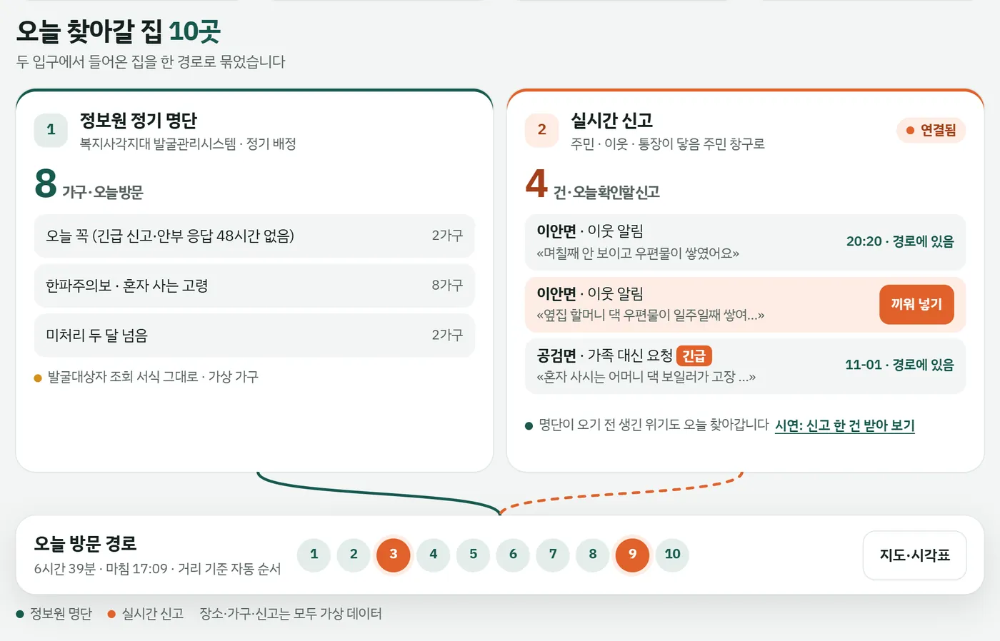
한국사회보장정보원이 위기정보 50종으로 명단을 보내면, 방문 순서·기록·보고는 읍면동 복지 공무원의 몫으로 남습니다. 닿음은 그 공백을 메웁니다.
정기 명단과 이웃의 신고를 같은 하루 경로에 합칩니다. 끼워 넣기 한 번에 순서와 시각을 다시 계산합니다.

정보원 순위는 그대로 두고, 현장 사정을 더한 «정보원 N순위 → 오늘 M번째 · 이유»를 보여 줍니다.
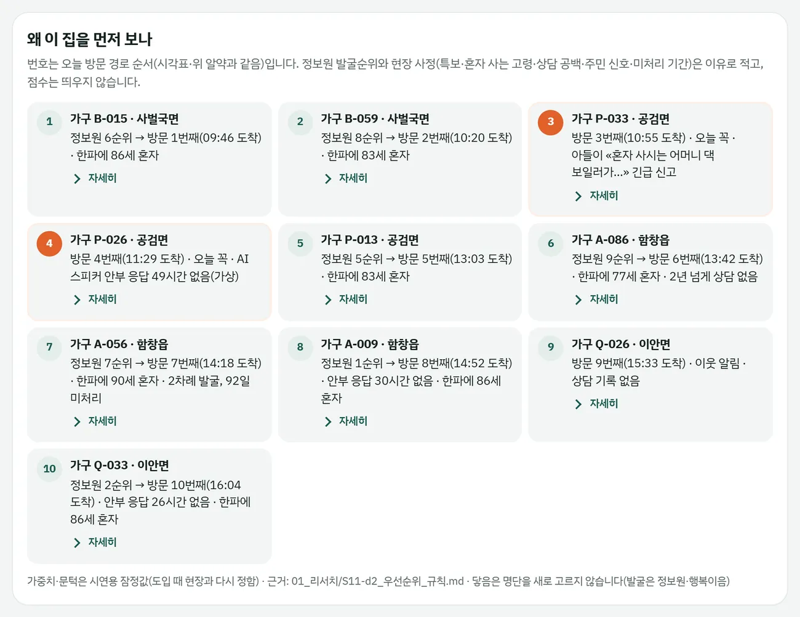
상담 대본에서 기록 초안을 만들고, 공무원이 고쳐 확정합니다. 결재용 한글(hwpx) 보고서는 바로 내려받습니다.
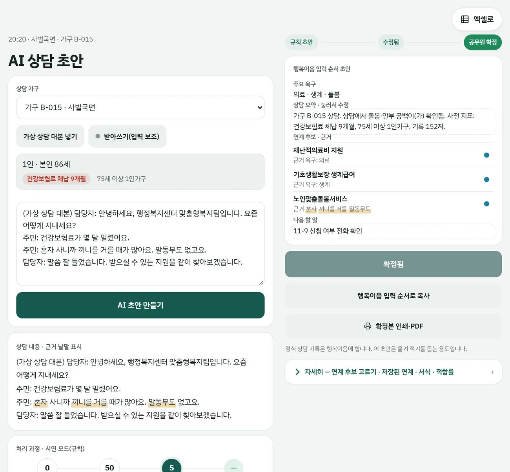
한국사회보장정보원 공공데이터 3종이 화면마다 일합니다. 현장에서 쓰는 조회 엑셀을 그대로 불러옵니다.
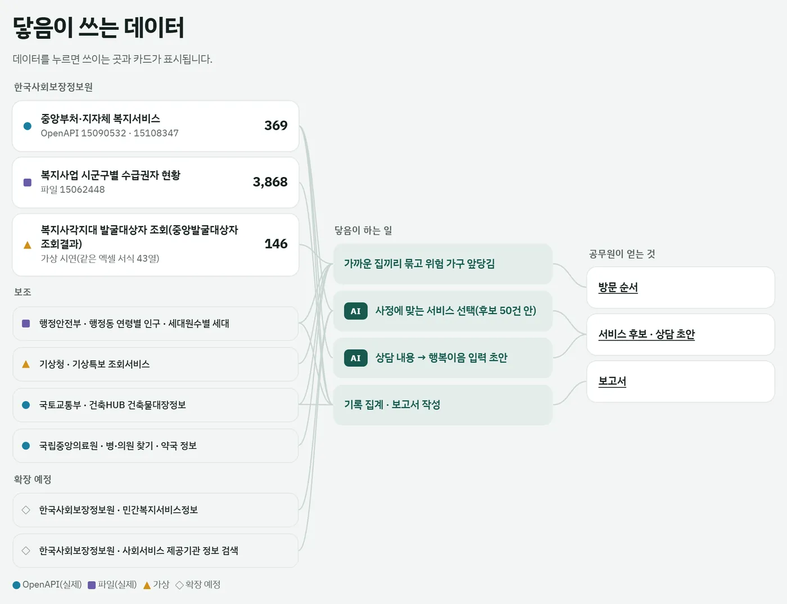
시연 모드 · 가상 데이터생성형 AI가 상담 대본에서 쟁점·욕구·연계 후보 초안을 만들고, 공무원이 고쳐 «확정»합니다. 처리 과정 4칸은 화면에 늘 보입니다.
이름·번호를 가린 뒤에만 AI로 보냅니다
공식 복지서비스 369건 가운데 추림
근거 낱말을 형광으로 표시
지어낸 서비스는 화면에 오르지 않습니다
가상 사연 20건 · 두 차례 측정
같은 20건 · 규칙만 쓰면 34/60
기준선 — AI가 첫 추천 6건을 더 맞힘
공식 목록 안에서만 답합니다
두 입구에서 들어온 집을 한 경로로 묶습니다.
읍면별로 묶은 순서를 네이버 지도 길안내로 이어 줍니다.
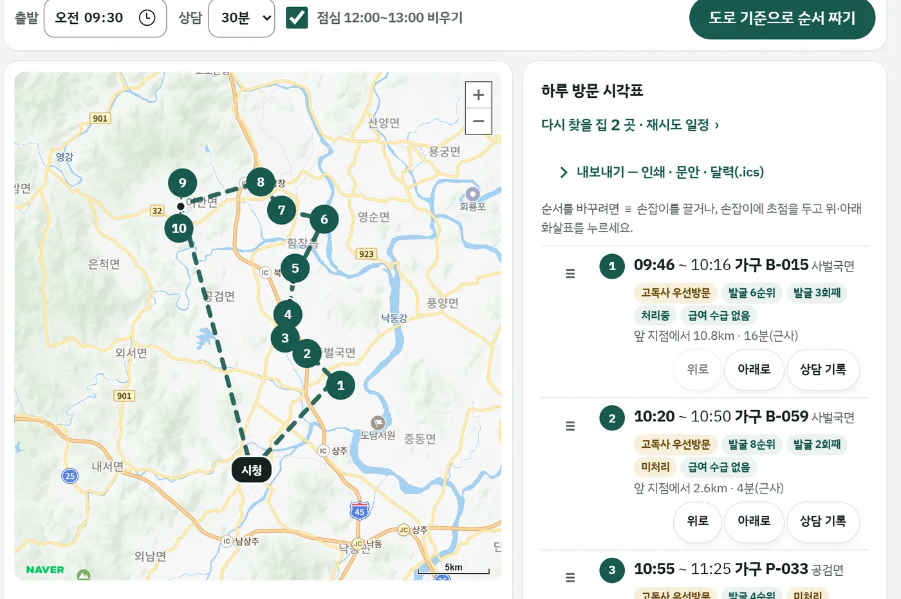
대본에서 초안을 만들고, 확정은 공무원이 합니다.
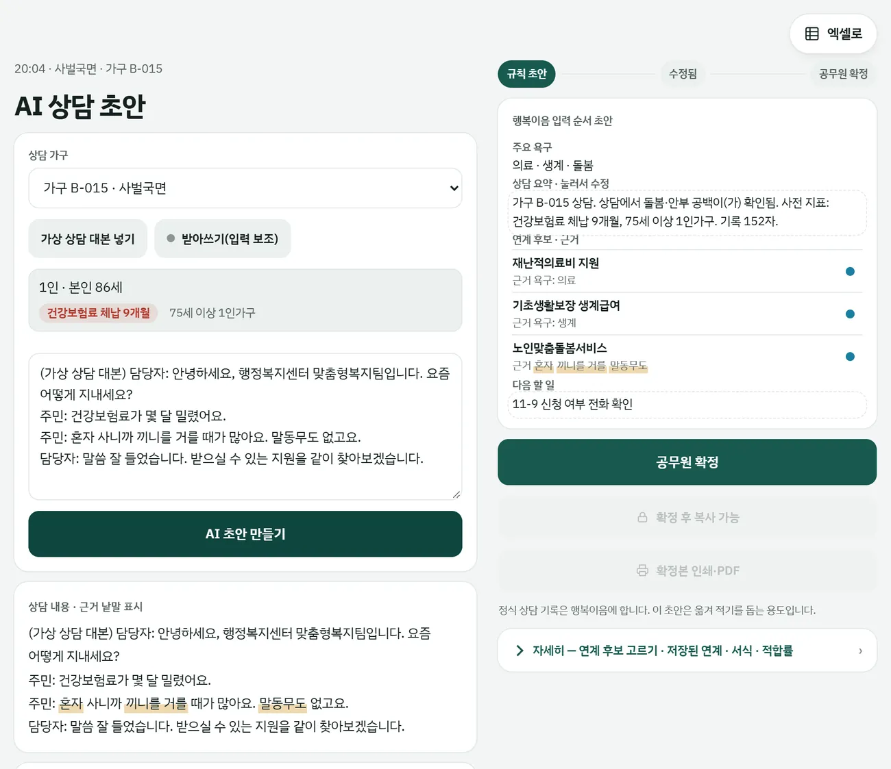
이번 차수 현황과 읍면 지표를 한 화면에.
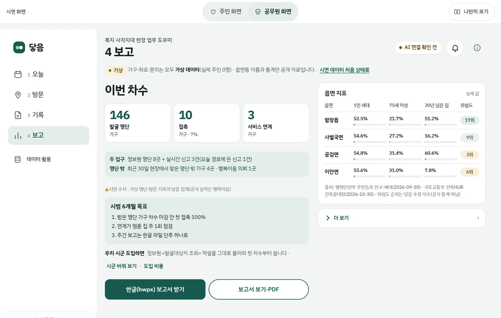
현장 설문 6명, API 활용 승인, 정보원 서식 대응
구현네 화면 + 주민 신고 화면, AI 서버 함수, 공개 배포
구현1개 시군 읍면동 2~3곳 실사용
계획정보원 시스템과 행정망 안에서 연계
계획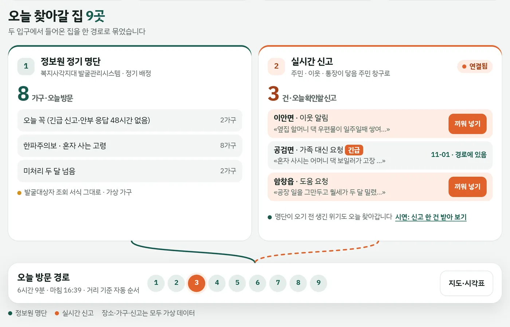
끼워 넣기 전 · 9곳끼워 넣은 뒤 · 10곳정기 명단과 실시간 신고를 같은 하루 경로에 합칩니다. 지금 경로에서 얼마나 가까운지, 일정이 얼마나 늘어나는지 보고 한 번에 넣습니다.
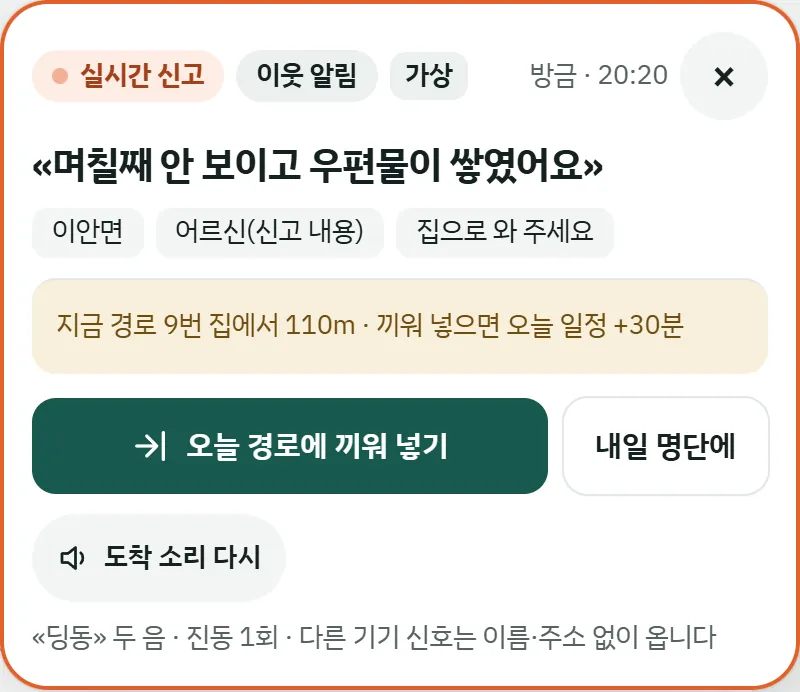
시연 9곳 · 직선거리×1.3 추정 · 가상 가구
| 기존 사례 | 하는 일 | 닿음이 다른 점 |
|---|---|---|
| 위기가구 발굴·행복이음 | 위기정보로 명단 선별·통보, 조회·상담 기록 | 명단은 그대로 받고, 그 다음 «오늘 어디를 왜 먼저»·신고 당일 반영·보고 출력 |
| AI 초기상담·안부전화 | 고위험가구에 AI 자동전화 | 전화가 닿지 않는 농촌 고령가구의 대면 방문 |
| 복지행정 AI 정책실험(경기) | 방문 상담 음성 → 기록·서비스 추천 | 기록 앞(방문 순서)과 뒤(공무원 확정·결재 보고)까지 |
정보원 발굴순위 위에 한파특보·혼자 사는 고령·지난 방문 공백·주민 신호·미처리 기간을 더해 «정보원 N순위 → 오늘 M번째 · 이유»로 보여 줍니다. 점수 숫자 대신 이유를 씁니다.
현장에서 본 명단 밖 가구는 메모로 등록하고, 다음 정보원 명단에 없으면 «신규 발굴 의뢰» 꼬리표가 붙습니다.
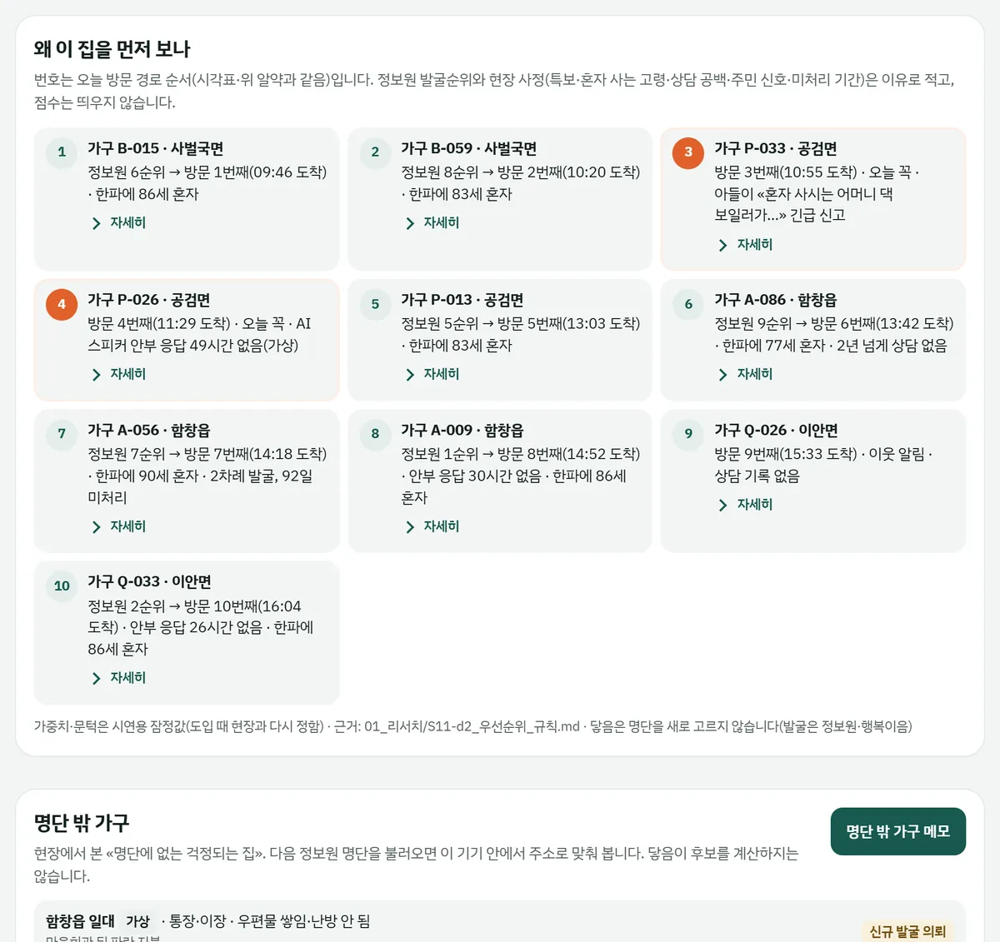
시연 모드 · 가상 데이터공공데이터 API와 정보원 서식을 그대로 쓰기 때문에, 어느 시군구든 같은 화면으로 시작합니다. PC·폰·태블릿 크기에 맞춰 보입니다.
복지 부서 공무원 창구 + 주민 신고 입구
AI 호출부가 한 곳이라 공공 클라우드·국산 모델로 바꿔도 화면 그대로
AI 실비(현실 추정 월 약 4.3만원) + 유지보수
자동 시험 파일 21개 · 한글(hwpx)·엑셀·PDF 출력 · 화면 대비 4.5:1·200% 확대 대응
방문 차량 이동 감소 · 시군당, 이동 20% 감소·담당 10명 가정(추정)
순서 근거 공개 · 최종 결정은 공무원 · AI 답은 공식 목록 안에서만
민간복지서비스·돌봄 제공기관 정보와 지역 후원·봉사 연결(계획)
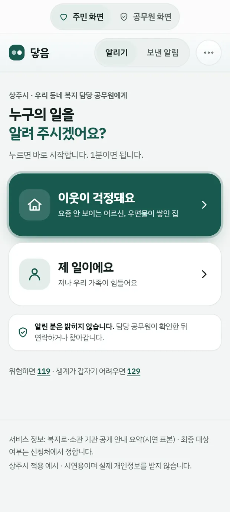
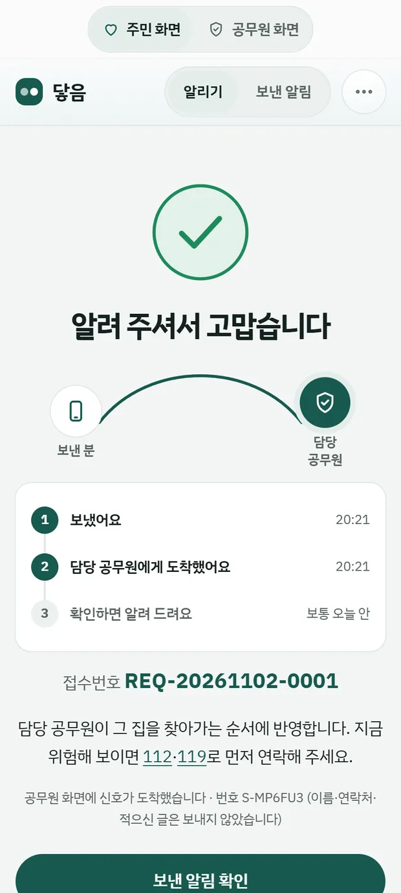
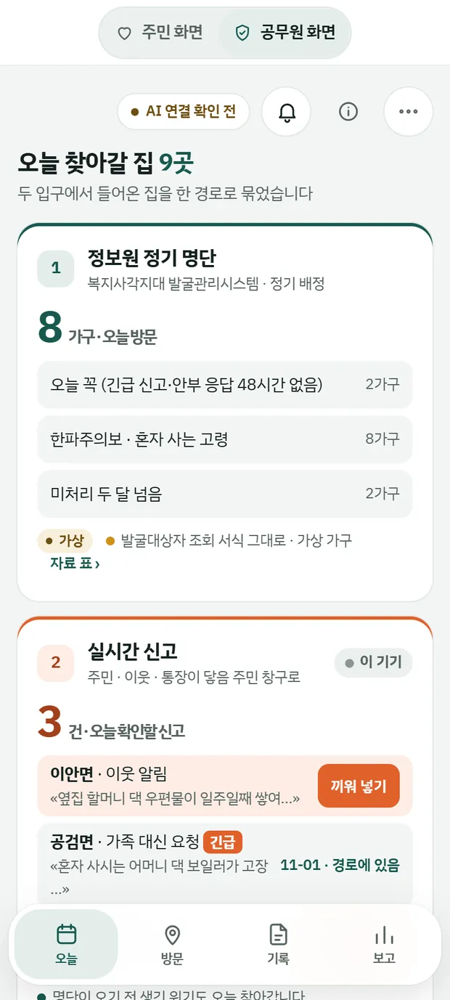
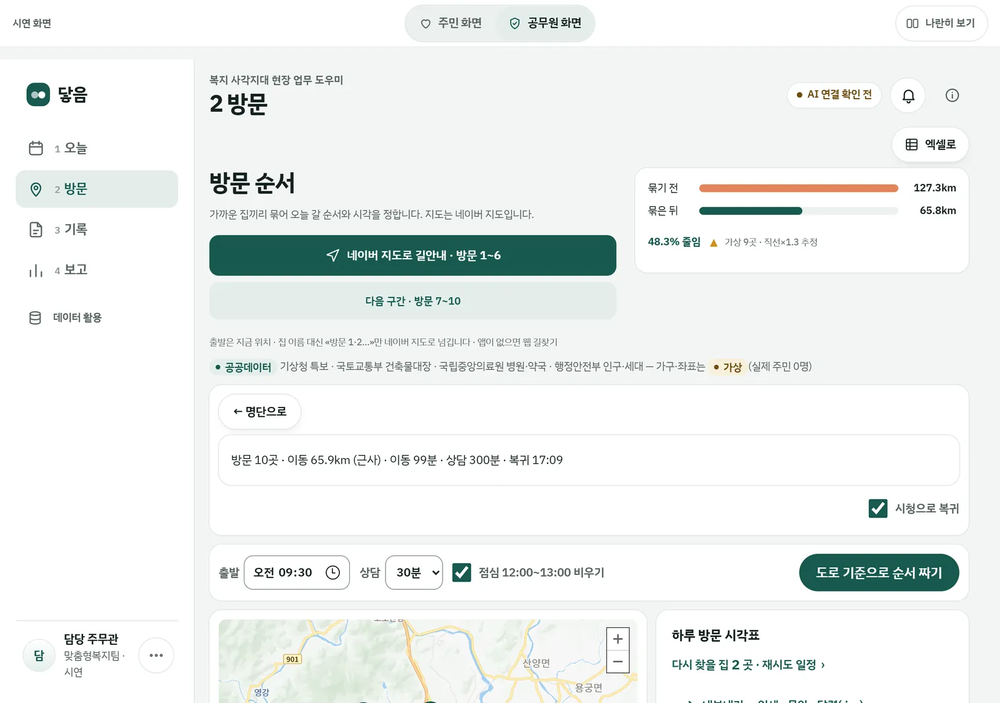
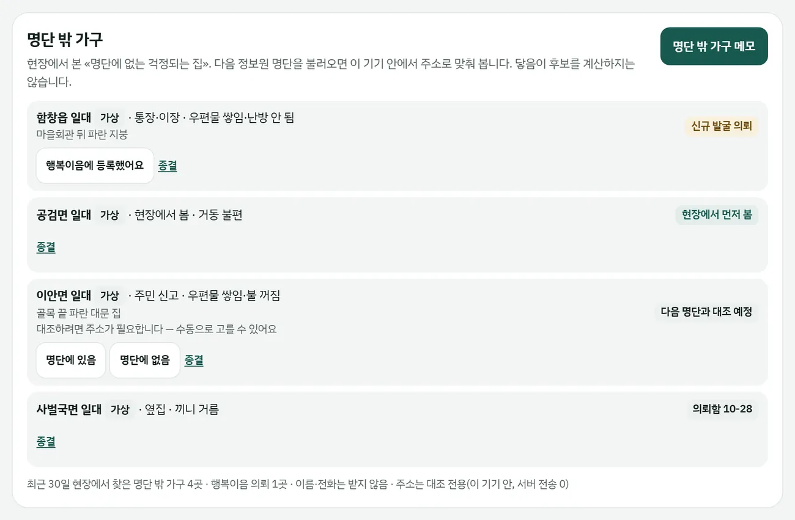
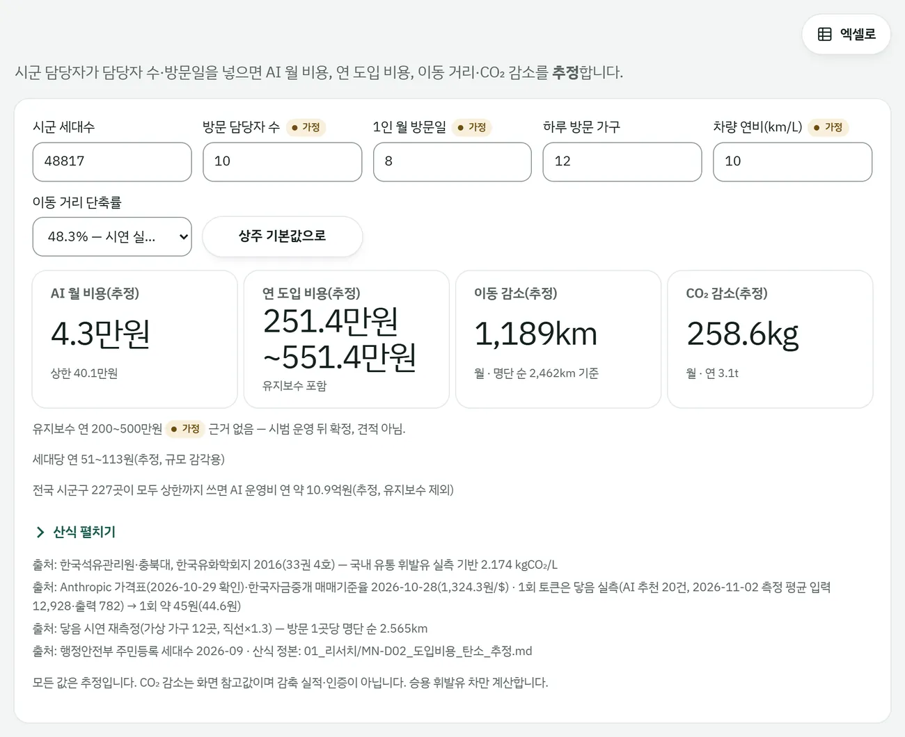